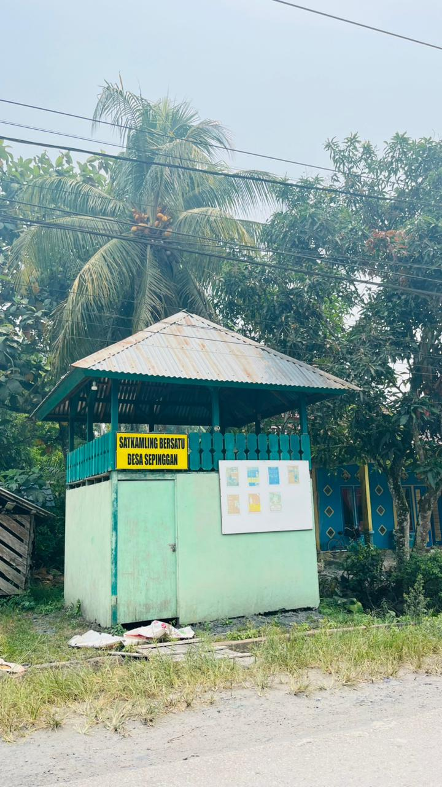
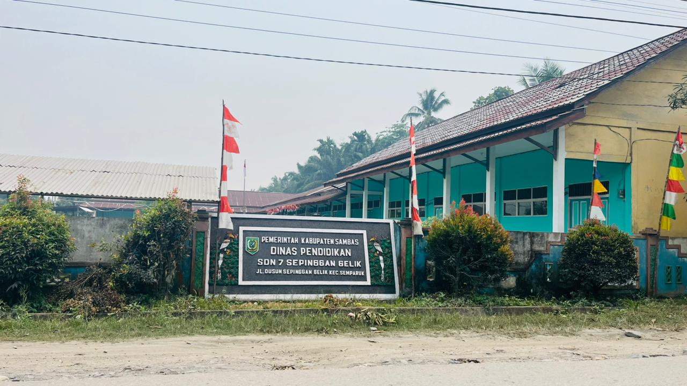
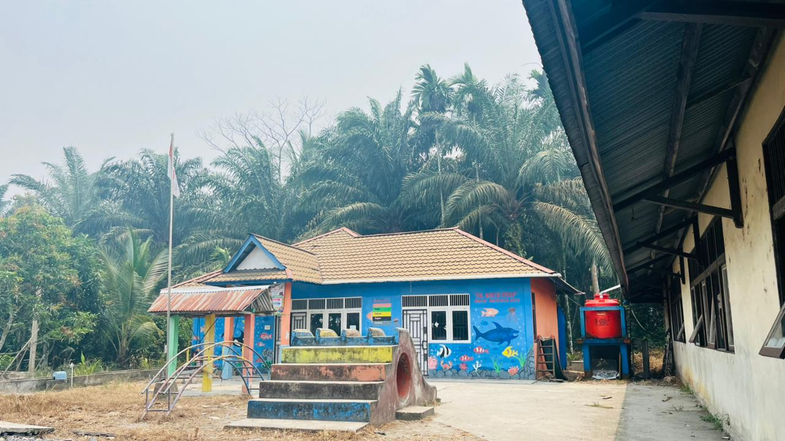

🌾
KEGIATAN MASYARAKAT
🌾
🚨 POS KAMLING
Kegiatan menjaga keamanan dan ketertiban lingkungan desa.

🏫 PENDIDIKAN
Pendidikan menjadi bagian penting dalam perkembangan generasi desa.

📚 SEKOLAH DASAR
Tempat anak-anak mendapatkan pendidikan dasar.

🎨 TAMAN KANAK-KANAK
Pendidikan anak usia dini untuk generasi penerus desa.